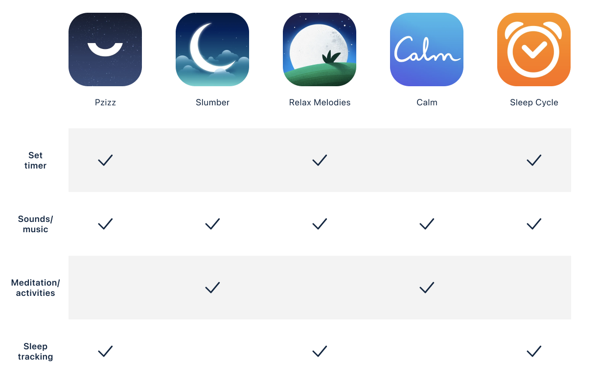
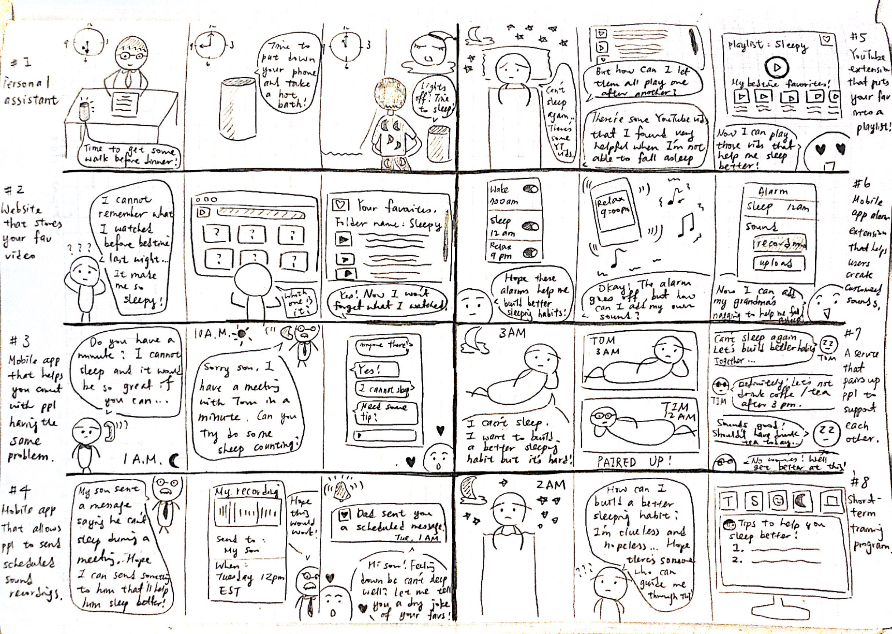

Project overview
How the story began
This all begins when I was still very little. I’ve never been the kind of person who can fall asleep in a few minutes after going to bed. Until now, it still usually takes me more than 15 minutes to fall asleep. Sometimes, it takes even longer. And whenever I couldn’t sleep at night, my mom would come and tell me to “Do some sheep counting and you’ll fall asleep!”
However, that has never been the case for me. I counted and counted and usually felt even more awake after sheep counting… And that has led me to become interested in things people are practicing to help themselves fall asleep better.
Role
UX researcher and designer from Oct - Feb 2021
Type
End-to-end design personal side project
Tools
Figma, Marvel, paper and pen
Research
Needs finding interviews
In the initial needs finding interviews, I talked with 3 potential users to learn from their experience and what they have tried to help them fall asleep. Some watch guinea pig YouTube videos while others call families just to expose themselves to dry daddy jokes. All these, according to interview participants, are ways to de-stress. However, there’s no one single action that works on every one. I found that sometimes, while not always, people themselves could be their best sleep therapist as they themselves know what exactly works best for them.
1.
People have different “secret recipes” that help them fall asleep faster.
2.
People look for ways to lift up the stress before going to bed.
3.
There’s no panacea for falling asleep fast that suits everyone’s needs.
Comparative analysis
With the findings in mind, I explored current solutions on the App Store to see what other apps have in common. Each app has its focus and strengths, but there are 4 common features that appear over and over again across different apps.

Comparative analysis of 5 other products
The missing piece
After comparing what existing apps and the insights gathered from user interviews, I found some missing pieces! For instance, for people who enjoy listening to others reading bedtime stories, sometimes, it’s very likely that friends and families are not always available, especially when people are living far away from their families. For people who love to listen to music to help them fall asleep, very often, they forget the music or video that had helped them fall asleep last time. And lastly, for those who know exactly what kind of music can help them sleep better, chances are that they just cannot find the exact one on YouTube or Spotify.
1.
People are not always there for us
Sometimes, families and friends are not available...
2.
Forgetfulness is the cunning devil
Very often, people forgot the music or video that helped them fall asleep...
3.
It's hard to access the exact magic powder
Other times, people know what helps them fall asleep but can’t find that on YouTube or Spotify...
Ideation
What if...
The findings and insights had led me to ideate and brainstorm on “What if there’s a mobile app that allows users to create their own sounds and videos to help them fall asleep?”

Brainstorming with crazy 8 sketches
Design
Conducting remote user tests with paper prototypes
To validate the ideas I came up with, I first sketched out simple paper prototypes. In the midst of pandemic, it wasn’t easy to plan for in-person testing sessions. Yet, with the help of Marvel, I was able to conduct remote user tests with paper prototypes. Two rounds of quick and dirty user tests helped me identify user pain points and gathered more stories.
Validating concepts with paper prototypes remotely
Rapid prototype and interation
Listening to more stories from users and watching them interact with paper prototypes led me to make the following 3 design decisions.
1st design change

2nd design change

3rd design change
Design system
Moving from mid-fidelity to hi-fi design mockups, I first chose a dark palette for the background and other lighter colors to ensure there’s a strong contrast. Besides, I utilized the components feature in Figma to speed up the iteration process.


Design system created in Figma
Next steps
Explore the potential of adding the video feature
Although I had pulled out the video feature from this iteration, I would still love to conduct more user research and even try to learn more about the science of sleep to help me make informed decisions on whether or not to include the feature in future iterations.
Further evaluate accessibility and readability
Evaluating accessibility and readability of the design in a darker environment is also a must because it’s very likely that users would be using this app in a darker place.
Takeaways
Leverage features that a tool offers
Design tools vary. Some come with sophisticated layers while others bring highly customizable components to the table. In this side project, I crafted mobile UI elements on Figma and explored multiple ways of implementing components. The feature helped save time when I was pushing the design to pixel perfect. I’ve learned that like development, before jumping into the actual first line of code, doing some research on the tool first is a must.